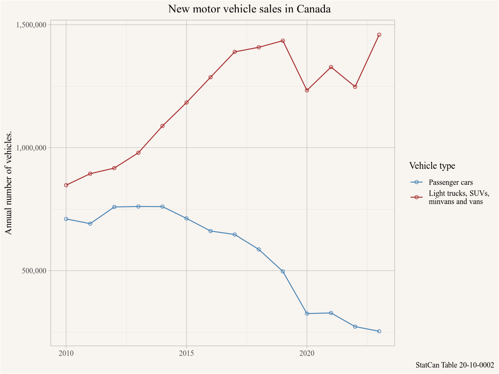
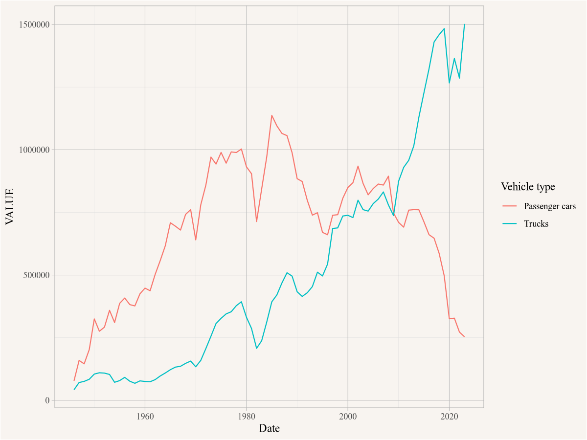
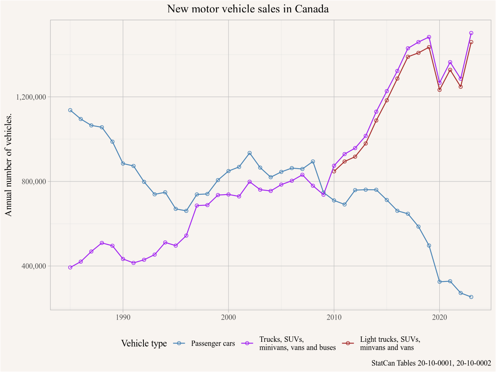

Building skills and community to analyze Canadian demographic and housing data.
Private motor vehicles in Canada seem to be getting larger and it feels like SUVs and light trucks are taking over. This subjective feeling prompts us to ask the following question to check if this is just our imagination or a real phemominon.
7.1 Question
Are SUVs and light trucks taking over in Canada?
This question is somewhat vague, it’s not clear what taking over means. But the question is clear enough to get us started on some descriptive analysis.
7.2 Data sources
Data discovery can be challenging, but just typing “statcan motor vehicle sales” into a search engine is a good start and gets us to the StatCan table enumerating data on new motor vehicle sales. We can also use the built-in search functionality in the {cansim} package.
# A tibble: 2 × 4
cansim_table_number cubeTitleEn cubeStar…¹ cubeEndD…²
<chr> <chr> <date> <date>
1 20-10-0001 New motor vehicle sales 1946-01-01 2022-07-01
2 20-10-0002 New motor vehicle sales, by type of… 2010-01-01 2021-01-01
# … with abbreviated variable names ¹cubeStartDate, ²cubeEndDate
There are two tables with motor vehicle sales, we can inspect them on the web or via the {cansim} package. The second table covers a much shorter time period, and is also less recent. We will check out the first table to see if it fits our needs.
To access the web we can simply type view_cansim_webpage("20-10-0001") into the console, which will open the StatCan webpage for Table 20-10-0001. Getting table overview data via the {cansim} package requires to load the table first, which can be slow for larger tables.
get_cansim_table_overview("20-10-0001")
This tells us that Table 20-10-0001 might have the information we need, we check the table notes to better understand what “Trucks” entails, selecting the two columns we are interested in.
Prior to 1953, data for Canadian and United States manufactured vehicles and overseas manufactured vehicles are not segregated.
British Columbia and the Territories
Includes Yukon, Northwest Territories and Nunavut.
Trucks
Trucks include minivans, sport-utility vehicles, light and heavy trucks, vans and buses.
Total, overseas
Includes Japan and other countries.
NA
Seasonally adjusted data for the New Motor Vehicle Sales survey are available for the period between January 1991 to February 2012.
It looks like “Trucks” does includes SUVs, but next to light trucks it also includes heavy trucks and buses. It also includes minivans, and thinking back at our original question, we might want to refine it to include minivans.
This allows us to separate passenger cars from basically everything else. Thinking that heavy truck and bus sales probably only make up a small portion, we could use that as a stand-in for our “SUVs and light trucks” in our question. But the match is not ideal and this leaves questions open.
Maybe Table 20-10-0002 works better for our purposes, time to look at the table overview.
get_cansim_table_overview("20-10-0002")
The frequency is only annual as opposed to the monthly data from the previous table, but the breakdown of vehicle types looks much better for our purposes, it allows us to distinguish light trucks from heavy trucks and buses. Time to check the table notes for more details on the definitions.
Includes Yukon, Northwest Territories and Nunavut.
Trucks
Trucks include minivans, sport-utility vehicles, light and heavy trucks, vans and buses.
Light trucks
Light trucks: include minivans, sport-utility vehicles, light trucks and vans.
Heavy trucks
Heavy trucks: include class 4, 5, 6, 7 and 8 trucks.
This looks like it fits what we need, we want to compare unit sales of Passenger cars to Light trucks.
7.3 Data acquisition
Getting the data is easy now. The {cansim} package will automatically add a native Date column, to convert annual data to dates it defaults to July 1st of that year. While it is a sensible default to assign a mid-year date to annual data, later on for plotting it will be more convenient for us to set the date at January 1st, so we change override the default using the optional default_month argument.
data <-get_cansim("20-10-0002", default_month =1)data |>select(Date,GEO,`Vehicle type`,Sales,val_norm) %>%head()
# A tibble: 6 × 5
Date GEO `Vehicle type` Sales val_norm
<date> <chr> <fct> <fct> <dbl>
1 2010-01-01 Canada Total, new motor vehicles Units 1584499
2 2010-01-01 Canada Total, new motor vehicles Dollars 52315609000
3 2010-01-01 Canada Passenger cars Units 710214
4 2010-01-01 Canada Passenger cars Dollars 18982437000
5 2010-01-01 Canada Trucks Units 874285
6 2010-01-01 Canada Trucks Dollars 33333173000
Quick inspection of the data, using the columns we identified in the overview, helps identify the basic structure of the data.
7.4 Data preparation
There is not much data preparation needed, we just filter down to the data we are interested in.
plot_data <- data |>filter(`Vehicle type`%in%c("Passenger cars","Light trucks"), Sales=="Units", GEO=="Canada")
7.5 Analysis and visualization
Time to lake a look what this looks like, to plot we filter for the overall Canadian data series, and tell ggplot to map Date on the x-axis, the values colum `VALUE` on the y-axis, and colour by vehicle type.
This is looking good, time to clean up the graph a bit. We add markers for the data points, nicer axis labels, as well as a title and labels.
ggplot(plot_data,aes(x=Date,y=VALUE,colour=`Vehicle type`)) +geom_point(shape=21) +geom_line() +scale_y_continuous(labels=scales::comma) +scale_color_manual(labels=c("Light trucks"="Light trucks, SUVs,\nminvans and vans"),values=c("Light trucks"="brown","Passenger cars"="steelblue")) +labs(title="New motor vehicle sales in Canada",x=NULL,y="Annual number of vehicles.",caption="StatCan Table 20-10-0002")

This answers our question in that more light trucks, SUVs, minivans and vans are sold than cars, and the gap has been growing. But the data only starts in 2010, and we suspect that things weren’t always this way. At what point did SUVs and light trucks overtake new car sales?
To answer than we need to jump back and load the other time series. It won’t let us separate out heavy trucks and buses, but we can estimate how bad the difference is by comparing it to this data.
We load the data and filter it down to the parts that we are interested in.
data2 <-get_cansim("20-10-0001")plot_data2 <- data2 |>filter(`Vehicle type`%in%c("Passenger cars","Trucks"), Sales=="Units",`Origin of manufacture`=="Total, country of manufacture",`Seasonal adjustment`=="Unadjusted", GEO=="Canada")
A quick plot gives us a general idea what this looks like.
There is a strong seasonal pattern in vehicle sales, for now we will just aggregate it to annual sales so we can compare it with the previous data. For this we extract they Year from the Date column, group by Year and Vehicle type and summarize by adding up the `VALUE` column. We added a count column to keep track how many months we added up so we can later ensure we are only showing years for which we have complete data.
plot_data2_annual <- plot_data2 |>mutate(Year=strftime(Date,"%Y")) |>group_by(Year,`Vehicle type`) |>summarise(VALUE=sum(VALUE), n=n(),.groups="drop") |>mutate(Date=as.Date(paste0(Year,"-01-01"))) |>filter(n==12) # only use years with full 12 months of dataggplot(plot_data2_annual,aes(x=Date,y=VALUE,colour=`Vehicle type`)) +geom_line()

Time to combine this with our previous data. This tells us that the most interesting change happened 1985 and onward, so we will discard earlier years. One quick sanity check is to see if the annual passenger car sales derived from the two series agree for the years where they are in common. Here we join the two data tables by Date and Vehicle type in order to compare the two estimate. We rename the VALUE column on the first one in order to avoid name conflicts.
The data for all years agrees, except for 2013 where one series counts 4 more passenger cars.
bind_rows(plot_data %>%filter(`Vehicle type`!="Passenger cars"), plot_data2_annual %>%filter(Date>=as.Date("1985-01-01"))) %>%ggplot(aes(x=Date,y=VALUE,colour=`Vehicle type`)) +geom_point(shape=21) +geom_line() +scale_y_continuous(labels=scales::comma) +scale_color_manual(labels=c("Light trucks"="Light trucks, SUVs,\nminvans and vans","Trucks"="Trucks, SUVs,\nminivans, vans and buses"),values=c("Light trucks"="brown","Passenger cars"="steelblue","Trucks"="purple")) +theme(legend.position ="bottom") +labs(title="New motor vehicle sales in Canada",x=NULL,y="Annual number of vehicles.",caption="StatCan Tables 20-10-0001, 20-10-0002")

7.6 Interpretation
This confirms our initial suspicion that the “Trucks” category is dominated by light trucks, SUVs, minivans and vans, at least for the years 2010 onwards where we have data for both. Which gives us confidence to say that truck and SUV sales caught up to passenger cars sales by around 1997, and the two evolved fairly parallel until 2009, after which SUVs and light trucks increased dramatically and passenger car sales fell.